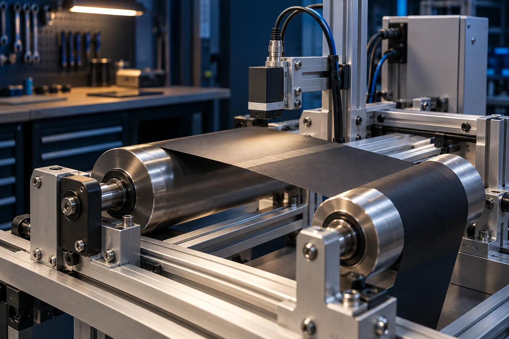
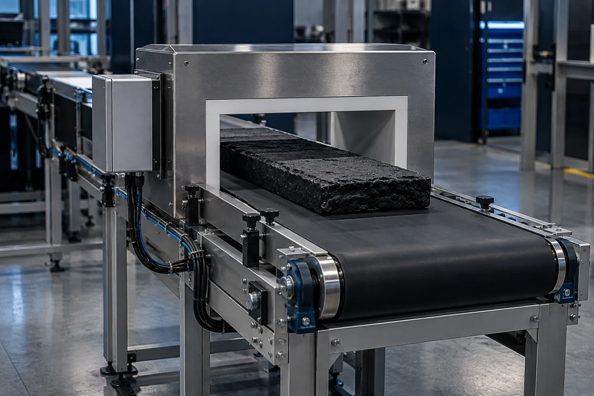
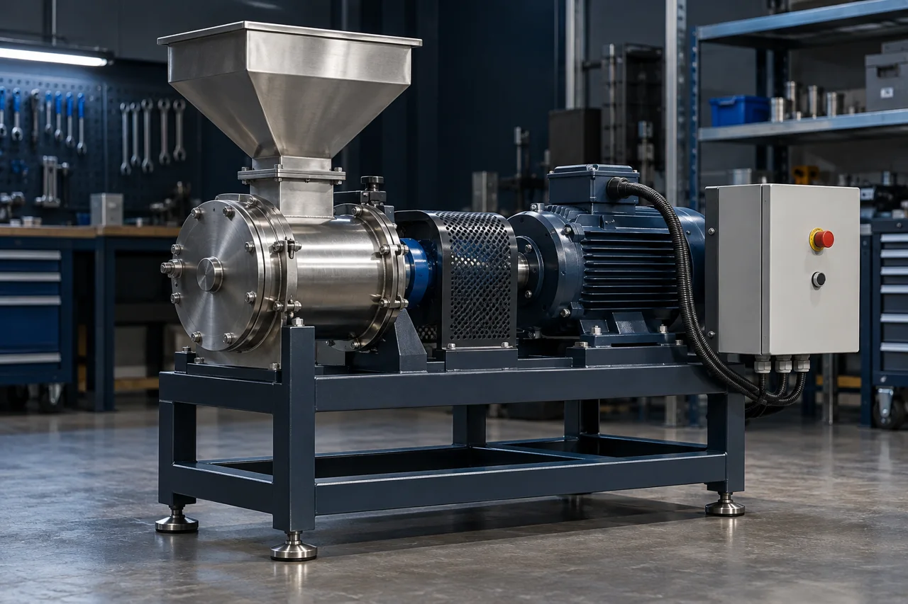
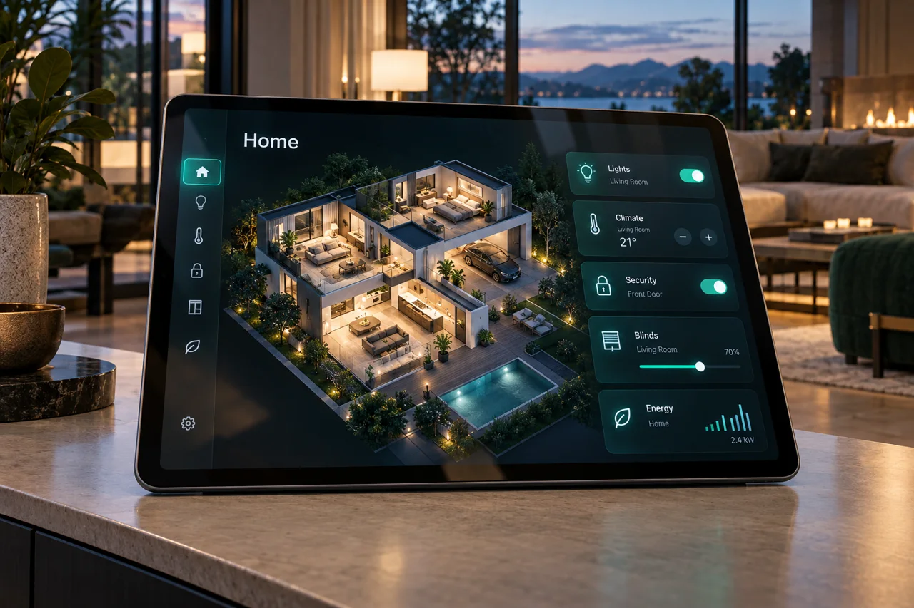
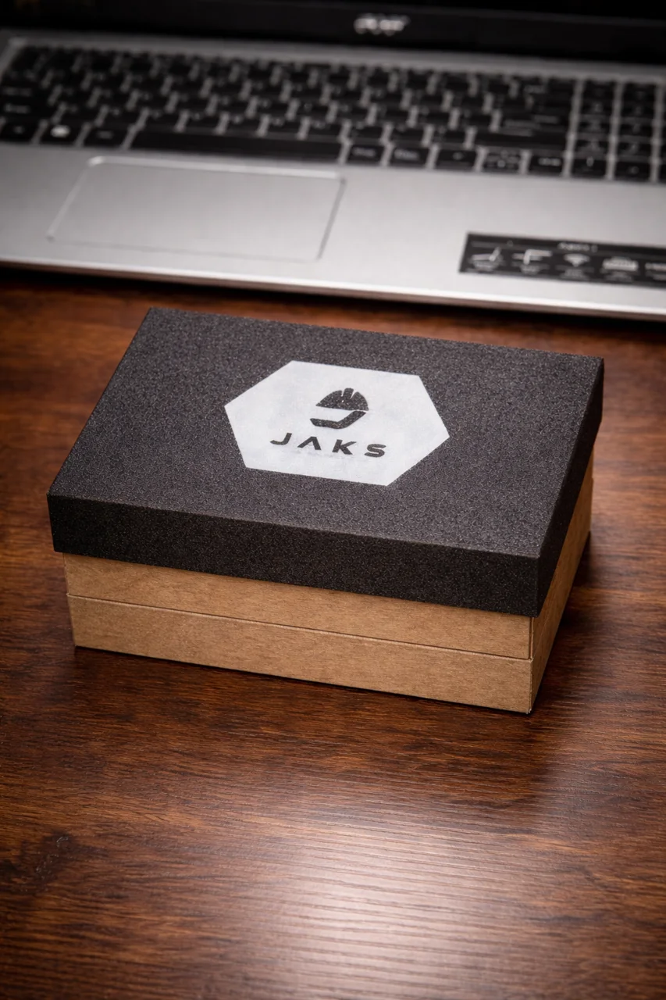

AutomationDocumentation in Progress
Splice Detection Automation
Automation work focused on detecting a splice and integrating that event into a machine workflow.
Engineering project experienceMechatronics engineering for machine design, system integration and automation. From a new mechanism to an equipment retrofit, I combine mechanics, electronics and control to turn ideas into functional systems.
Led by Jonathan Tapia
Mechatronics engineer · Builder · Problem solver
01 Engineering solutions
Start with the task. Define the constraints. Build something we can evaluate.
Connect detection, control and automatic operation.
Understand what exists. Redesign what needs to work better.
Connect the physical world to useful behavior.
Make the idea tangible. Then test what matters.
02 Selected projects
Industrial automation, academic engineering and independent development. Each case identifies its context and the documentation available. Portfolio visuals are illustrative concepts.

Automation work focused on detecting a splice and integrating that event into a machine workflow.
Engineering project experience
A metal-detection automation project completed as part of Jonathan’s professional experience at Continental Tire.
Professional experience · Continental Tire
An automated industrial mill developed as Jonathan’s mechatronics engineering thesis project.
Academic engineering project · Thesis
Giving existing equipment automatic operation and device-based control, instead of replacing the entire product.
Independent home automation03 JAKS products
Made-to-order products from the existing catalog, alongside the lab’s engineering work.
A custom keychain that opens your digital card, menu, profile or business link with one tap.
 Catalog illustration
Catalog illustrationA premium lighted logo display for desks, counters, events, creators and business spaces.

Catalog illustrationA branded sample box or presentation kit made to help your business show products professionally.
Catalog images illustrate the offerings. Specifications, quantities and final scope are confirmed in your quote. Explore the visual catalog
Mechatronics Engineer
Founder, JAKS Engineering Lab
04 About Jonathan
I'm Jonathan Tapia, a mechatronics engineer combining industrial automation experience with the development of practical control and retrofit solutions.
My work includes splice detection, a metal-detection automation project at Continental Tire, an automated industrial mill developed for my thesis, and home automation that adds device-based control to existing equipment. Alongside hands-on manufacturing experience, these projects connect mechanical systems, electronics and control decisions. Professional experience, academic work and independent JAKS projects are identified separately in this portfolio.
05 Engineering journal
Design briefs and engineering notes from an evolving independent practice.
A working demonstration is a starting point. A useful case study explains what was tested and what remains unknown.
The first design question for an AI maintenance tool is the reporting workflow, before the device.
A useful NFC product combines the physical object with the page someone reaches after the tap.
06 Start a conversation
A process to improve. A device to explore. A part that needs to fit. Tell me where you're starting.
WhatsApp · (845) 270-4608Based inNew York & New Jersey
Let's talk inEnglish & Spanish